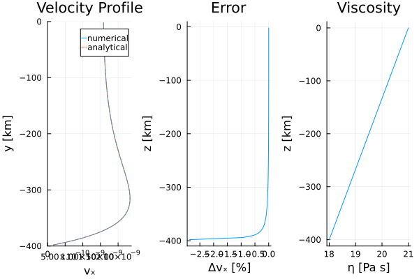

Channel Flow; Defect correction (1D)
Assuming a constant horizontal pressure gradient, and that the flow within the channel is driven solely by pressure and/or a prescribed horizontal velocity at the surface (or bottom, or both), the 1D Stokes equation describes the horizontal flow velocity within a channel and simplifies to:
\[\begin{equation} 0 = -\frac{\partial{P}}{\partial{x}} + \frac{\partial{\tau_{xy}}}{\partial{y}}, \end{equation}\]
where $P$ is the pressure [Pa], $\frac{\partial}{\partial x_i}$ denotes the partial derivative in the $i$-th direction, and $\tau_{xy}$ is the horizontal shear stress [Pa], defined by:
\[\begin{equation} \tau_{xy} = 2 \eta \dot{\varepsilon}_{xy}, \end{equation}\]
with $\eta$ the viscosity [Pa·s] and $\dot{\varepsilon}_{xy}$ the shear strain-rate [1/s], given by:
\[\begin{equation} \dot{\varepsilon}_{xy} = \frac{1}{2} \frac{\partial{v_x}}{\partial{y}}. \end{equation}\]
In this setup, the vertical velocity is assumed to be zero, reducing the problem to the $x$-component of the Stokes equation.
This example computes the horizontal velocity for a 1D Couette–Poiseuille channel flow with either constant or depth-dependent logarithmic viscosity. To compare with the analytical solution, the depth-dependent viscosity is defined as:
\[\begin{equation} \eta = \eta_0 exp\left(-log(m) \frac{y_v}{H}\right), \end{equation}\]
where $m$ is the viscosity ratio of $\frac{\eta_1}{\eta_0}$, $\eta_0$ and $\eta_1$ are the bottom and surface viscosities, respectively, $H$ is the model height, and $y$ the depth.
Based on the viscosity definition in equation (4), the analytical velocity solution is derived by integrating the $x$-component of the 1D Stokes equation twice. of the horizontal velocity from the 1D Stokes equation in $x$-direction by twice integrating equation (1). The analytical solution with depth depends on the viscosity ratio $m$, the horizontal pressure gradient $\frac{\partial P}{\partial x}$, and the shear velocity at the surface $v_{x,0}$. The analytical solution is given as:
\[\begin{equation} v_{x,ana} =\frac{1}{2 \eta_0} \frac{\partial{P}}{\partial{x}} \left(y^2 + Hy\right) + v_{x,0}\frac{y}{H} + v_{x,0}\quad \text{if } m = 1, \end{equation}\]
and
\[\begin{equation} v_{x,ana} = -\frac{\partial{P}}{\partial{x}} \frac{H}{\eta_0 log(m) (m-1)} \left(-y ( m^{\frac{y+H}{H}} - m^{\frac{y}{H}} ) + H ( m^{\frac{y}{H}}-1 ) \right) + \frac{v_{x,0}}{m-1}\left(m^{\frac{y+H}{H}} - 1\right) \quad \text{if } m \neq 1. \end{equation}\]
For more details on how the equations are solved using the defect correction method, please refer to the documentation
First, one needs to load the required moduls.
using Plots, ExtendableSparse, Printf, LinearAlgebra
using GeoModBox.MomentumEquation.OneDBegin by defining the model geometry and physical constants of the problem.
# Model Parameter ------------------------------------------------------- #
M = (
ymin = -400.0e3, # Depth [ m ]
ymax = 0.0e3,
)
I = (
vₓ₀ = 5/100/31536000, # Velocity top [ m/s ]
η₀ = 1.0e21, # Viscosity top [ Pa s ]
η₁ = 1.0e18, # Viscosity bottom [ Pa s ]
∂P∂x = -0.1e1, # horizontal pressure gradient [ Pa/m ]
)
I1 = (
m = I.η₁ / I.η₀, # Viscosity ratio
)
I = merge(I,I1)
# ----------------------------------------------------------------------- #The following section defines the numerical parameters.
# Numerical Parameter --------------------------------------------------- #
NC = (
y = 100, # Number of centroids
)
NV = (
y = NC.y + 1, # Number of vertices
)
Δ = (
y = (M.ymax-M.ymin)/NC.y, # Grid resolution
)
# Grid ---
y = (
c = LinRange(M.ymin+Δ.y/2,M.ymax-Δ.y/2,NC.y),
v = LinRange(M.ymin,M.ymax,NV.y),
)
# Iterations ---
niter = 10
ϵ = 1e-10
# ----------------------------------------------------------------------- #
# Allocations ----------------------------------------------------------- #
D = (
η = zeros(NC.y+1),
vₓ = zeros(NC...),
vₓₐ = zeros(NC...),
Δvₓ = zeros(NC...),
vₓₑ = zeros(NC.y+2),
δvₓ = zeros(NC...),
R = zeros(NC...),
∂τxy∂y = zeros(NC...),
τxy = zeros(NV...),
∂vₓ∂y = zeros(NV...),
)
# ----------------------------------------------------------------------- #Next, compute the viscosity profile and the analytical velocity solution.
# Viscosity ------------------------------------------------------------- #
@. D.η = I.η₀ * exp(-log(I.m)* y.v / (M.ymax-M.ymin))
# ----------------------------------------------------------------------- #
# Analytical Solution --------------------------------------------------- #
if I.m == 1.0
@. D.vₓₐ = 1.0/2.0/I.η₀ * I.∂P∂x *
(y.c^2 + (M.ymax-M.ymin).*y.c) +
I.vₓ₀*y.c/(M.ymax-M.ymin) + I.vₓ₀
else
@. D.vₓₐ = -I.∂P∂x * (M.ymax-M.ymin) / I.η₀ / log(I.m) / (I.m-1) *
(-y.c *
(I.m^((y.c + (M.ymax-M.ymin))/(M.ymax-M.ymin)) -
I.m^(y.c/(M.ymax-M.ymin))) +
(M.ymax-M.ymin)*(I.m^(y.c/(M.ymax-M.ymin)) - 1)
) +
I.vₓ₀ / (I.m-1) * (I.m ^ ((y.c+(M.ymax-M.ymin))/(M.ymax-M.ymin)) - 1)
end
# ----------------------------------------------------------------------- #Define the boundary conditions for the velocity.
# Boundary Conditions --------------------------------------------------- #
VBC = (
type = (S=:Dirichlet, N=:Dirichlet),
val = (S=0.0,N=I.vₓ₀)
)
# ----------------------------------------------------------------------- #Define the arrays required to construct the linear system of equations.
# Coeffficientmatrix ---------------------------------------------------- #
Num = (Vx=1:NC.y,)
ndof = maximum(Num.Vx)
K = ExtendableSparseMatrix(ndof,ndof)
# ----------------------------------------------------------------------- #Solve the linear system using the defect correction method.
# Solution -------------------------------------------------------------- #
for iter=1:niter
# Evaluate residual ---
ComputeStokesResiduals1D!(D, I.∂P∂x, Δ.y, VBC)
@printf("||R|| = %1.4e\n", norm(D.R)/length(D.R))
norm(D.R)/length(D.R) < ϵ ? break : nothing
# Assemble linear system ---
K = AssembleStokesMatrix1D(NC.y, D.η, Δ.y, VBC, K)
# Solve for temperature correction: Back substitutions ---
D.δvₓ .= -(K\D.R[:])
# Update temperature ---
@. D.vₓ += D.δvₓ[Num.Vx]
end
# ----------------------------------------------------------------------- #Finally, compute the relative deviation from the analytical solution and generate a multi-panel plot of the results.
# Deviation from the analytical solution -------------------------------- #
@. D.Δvₓ = ((D.vₓₐ - D.vₓ) / D.vₓₐ) * 100.0
# ----------------------------------------------------------------------- #
# Plotting -------------------------------------------------------------- #
q = plot(D.vₓ,y.c./1e3,label="numerical",
xlabel="vₓ", ylabel="y [km]",
title="Velocity Profile",
xlim=(0,I.vₓ₀*1.5),ylim=(M.ymin/1e3,M.ymax/1e3),
layout=(1,3),subplot=1)
plot!(q,D.vₓₐ,y.c./1e3,label="analytical",linestyle=:dash,
subplot=1)
plot!(q,D.Δvₓ,y.c./1e3,label="",
xlabel="Δvₓ [%]",ylabel="z [km]",
title="Error",
subplot=2)
plot!(q,log10.(D.η),y.v./1e3,label="",
xlabel="η [Pa s]",ylabel="z [km]",
title="Viscosity",
subplot=3)
display(q)
# ----------------------------------------------------------------------- #
savefig("./examples/StokesEquation/1D/Results/ChannelFlow.png")
Figure 1. 1D Poiseuille–Couette Flow. Velocity profiles (left), relative deviation between analytical and numerical solutions (center), and depth-dependent viscosity (right) for a 1D channel flow simulation.